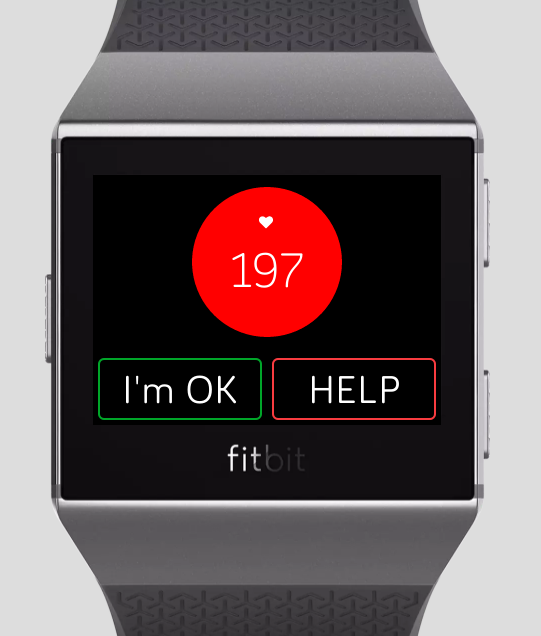
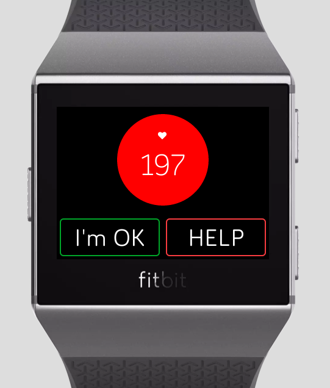

I wondered what unique challenges designing for a watch screen has because it was so small. Yet what surprised me was that basic Human Computer Interaction guidelines were still so applicable.
Heartbee was born at AngelHack San Francisco 2018 over the weekend of July 28-29, created together with three amazing teammates. Together we won three awards, including AngelHack's Code For A Cause Impact Award. We were very fortunate to have Sophia Liu, a professional designer, on the team. During the hackathon, I primarily wore my engineering hat and developed the watch app part of the project, but I was also very intrigued by the product design and worked closely with Sophia to design the watch app.
The Product
Heartbee tracks senior users' heart rate real time using the Fitbit watch. If the heart rate increases above a danger threshold and meets certain conditions, we will notify the senior's family and friends immediately and enable online video chat via our paired web and iOS apps. Care for your loved ones, easy as can bee.
We created this seamless watch face with just two buttons. If everything is normal, the background will be green. If the heart rate goes near the danger threshold, the background will turn yellow as a warning. Currently we are using the formula (220 - user age) to calculate the danger threshold. Potentially we can come up with better and more customized algorithms. If the heart rate goes above the danger threshold, the background will turn red and the watch will start vibrating. Now if the user doesn't press the "I'm OK" button within 5 seconds, the watch will automatically notify the user's family and friends. If the user presses the "I'm OK" button, the watch will stop vibrating and cancel the notification. However, if the user isn't feeling well, he or she can press the "HELP" button at any time, and the watch will immediately send out notifications regardless of heart rate.
 

The Inspiration
I spent the summer of 2018 interning in San Francisco, and I rented a place in Chinatown. Almost as soon as I moved in, I was intrigued by the interesting community. More than 60% of the community are senior citizens, which means that many of them don't have children living with them to take care of them. Yet the community is thriving in its own ways. The seniors do their own grocery shoppings, socialize with each other by playing chess at a plaza, and even run small family businesses like authentic Chinese food restaurants.
Imagine that Madeline is a busy young professional living in the city, and her grandma lives alone in Chinatown. Madeline's grandma has high blood pressure and heart disease. Even though grandma doesn’t speak English, she’s stubbornly independent, loves to do things herself like grocery shop. A month ago, Madeline went to grandma's place for dinner. Madeline arrived, found grandma on the ground short of breath. She was suffering from a fast heart rate. Madeline wished she could have taken care of grandma during an emergency like this, but it’s not easy to check up on your elderly parents when they insist on living alone.
San Francisco Chinatown is full of elderly citizens like Madeline's grandma. Statistics show that more than 70% of them suffer from cardiovascular disease. We want to connect elderly parents and their family members in a way that doesn’t intrude on their independence, but make sure they’re being taken care of.
The Design
From wireframing to MVP
Sophia's initial wireframing was the following:
She came up with four features for the app: daily check in, heart rate monitor, badges, and family leaderboard. That would be a lot to implement during a hackathon, so I purposed to discuss a minimum viable product (MVP). The team agreed that the heart rate monitor was the most important feature, while badges and family leaderboards were nice-to-haves. However, the daily check in feature was in doubt. I thought that we should not implement this feature.
"Would it be kind of annoying if everyday your watch asks you, 'Are you feeling okay?'" I thought aloud.
"Then how would the family know how the elders are doing?" Sophia asked. After some more discussion, she said, "I think it comes down to whether we want to give more control to the family or to the elders."
She was right. If we give the elders more control and privacy, their families may not know their real-time health as well. If we give the family more control, the app might be more obtrusive and even annoying to the elders. I thought that the elders were the ones who will ultimately wear the watch and use the app. If they found the app obtrusive or annoying, they might stop using the app altogether. We wanted to brand the app as a way for the family to take care of the elders in a way that doesn’t intrude on their independence, so I would err on the side of giving the elders more control. Plus, it was already hard to get the elders to try new technologies, so I would err on the side of making the app simpler, with one less feature.
The team agreed. Notably, since this was a hackathon, I pretty much had to rely on my intuition and reasoning. But I could have been wrong. If this were real work, I could imagine rolling out an A/B test to see whether users like the daily check in feature. But back then, the wireframe was reduced to the following:
So now when the user opens the app, the screen will show his/her real-time heartrate. If the heartrate was too high, the "help" and "I'm Ok" buttons would appear. There was one more problem: what if the algorithm thinks that the elder was Ok but the elder was actually not feeling well? I purposed that the "help" button should be on the first screen too. Ultimately, we came down to a single screen that I ended up implementing (the background color of the circle changes accordding to heart rate):
Giving users feedback
Before the hackathon I thought, "I've designed for PC and phone screens before, but never a watch screen. I wonder what unique challenges it has because it's so small!" Yet what surprised me was that basic Human Computer Interaction guidelines are still so applicable. Initially we were so focused on what happens on the family’s end after the senior user sends out help messages that we forgot to give feedback on the senior’s end. Regardless of the screen size, if a user presses a button and the interface gives no feedback, it would be poor design. So I added a pop-up “take care” message that will show up after the user presses the “I’m OK” button and auto-disappears after three seconds. I also added a “help is on the way, log on to www.heartbee.com” message after the user presses the “help” button to reassure the user and inform them of the next step.

Vibration
At the end of the hackathon, when we pitched to the judges, one judge asked, "What if the user is doing something else and not paying attention to the watch (and then the watch sends out notifications to families but the user is really feeling ok)?" The judge thought that the question would get us, but fortunately I was prepared.
"When the heart rate reaches the warning threshold," I answered, "the watch will vibrate once to get attention. When the heart rate reaches the danger threshold, the watch will keep vibrating until help is sent or the user presses the 'I'm OK' button."
The judge was satisfied by the answer. Initially vibration wasn't part of the MVP, but when I tried to imagine a user wearing the watch and using our app, I insisted on adding vibration as part of the full user experience.
The Re-design
After the hackathon, I thought a bit more about the design. Since the watch screen is so small, it is quite easy to press the wrong button. So I thought about adding a few more confirmation steps along the way:
I got rid off the "I'm OK" button on the home screen. Instead, I added an "Are you OK" question that will only be triggered by above-danger heart rate. My critiques of the previous design is that the user may not remember to press the "I'm OK" button in a panic. It is better to ask them explicitly.
I also changed the layout of the home screen. Instead of using circles with different backgrounds, I used bars to signify how close the heart rate is to the warning and danger thresholds.
It remains an interesting question how one would actually test out the product. People will likely behave differently when their hearts are beating way faster than usual. I do not yet know how to simulate that behavior in user testing.